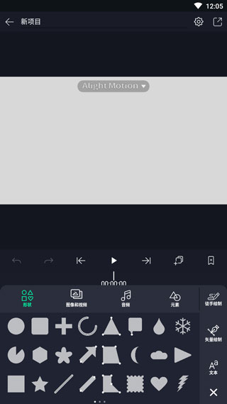

Alight Motion 从零到一段卡点短视频：跟我走一遍完整流程
不想再看零散的切片教程？这篇把从新建工程到导出成品的完整路径串起来，跟着做一遍，你就能独立产出一条带开场动画的卡点短视频。
读完这篇你能独立完成一段带开场动画的卡点短视频，从新建工程到导出不踩坑。整个流程不超过一个小时，适合第一次打开这个应用的人。
准备：你需要什么
- 一台 iPhone / iPad 或安卓手机，应用装到本地就行，免费版够用。版本号 5.0.295.2003600 是整理过的下载包，功能细节官方后续可能更新，但操作逻辑不会变。
- 一段 10~20 秒的背景音乐（建议带明显鼓点，方便后面卡点），以及一段你要剪的视频素材。
- 对「关键帧」这个词有个模糊印象就够，不懂也没关系，用到时会解释。
安装包从官方下载渠道拿就行，免费版导出带水印，想去掉订阅 Pro 版。它的官网上有一份更详细的功能说明，感兴趣可以翻翻；后续遇到参数记不准的地方，alight motion文档里基本都能查到现成的写法。
第一步：新建工程，先把画布定好
打开应用，首页点「+」新建项目。这一步别急着点确定，画布参数影响后面所有操作：
- 宽高比选 9:16（竖屏短视频的标准比例）；
- 帧率 30fps 就行，60fps 机器压力大且多数平台不支持；
- 背景色保持黑色，后面想换随时改。

确定后你会进入主编辑器——这是整个应用的核心界面，花 30 秒扫一眼：底部是时间线，左侧是图层列表，顶部是播放控制和撤销按钮。图层条上每一段都代表一个素材或效果，后面所有操作都在这些条上进行。

第二步：导入素材，先把节奏搭起来
先点时间线底部的「+」，分别把音频和视频素材加进来。音频加进时间线后你会看到波形——鼓点和停顿在波形上一目了然，这就是后面卡点的基准线。
然后做两件事：
- 定位第一帧：把播放头（那条竖线）拖到音频第一个鼓点上，记一下这个帧号。把视频素材拖进来，裁掉开头，让视频的起始帧和这个鼓点对齐。裁剪时先选中视频图层条，找到「时间与速度」面板里的起始时间按钮，点一下当前帧就是素材开头。
- 把长视频切成几段：播放头定位到每个鼓点位置，用同一面板里的「分割」按钮切开。切完后每一段就是一个小片段，可以分别加效果。别急着点下一步——这一步的精度决定了后面卡点准不准，建议把时间线放大到帧级别再切，逐帧微调播放头。
第三步：做一个开场动画——矢量描边生长
这是最能体现它和普通剪辑软件区别的一步。我们做一个简单的：一条线段从左到右被「画出来」，落在画面中央作为开场标记。
- 加一个形状图层：点时间线「+」选「形状」，内置形状库里挑一条直线（或用绘制工具自己画一条贝塞尔线）。
- 把这条线调到画面合适的位置，设好描边颜色和粗细。
- 给「描边」参数打关键帧：
- 播放头在开场前 0.5 秒，描边长度设为 0%，打关键帧；
- 播放头在第一个鼓点处，描边长度设为 100%，打关键帧。
- 把这个描边图层挪到视频片段的上层，让线出现在视频画面上方。
播放预览一下——你应该能看到线随着鼓点节奏生长出来。如果动画太硬，打开关键帧面板把缓动曲线改成「弹性」或「渐入渐出」，会自然很多。
第四步：加一个转场，让两段视频衔接不生硬
两段切开的视频之间如果直接跳切，观感会很突兀。我们用全屏色块做一个几何转场：
- 在两段视频的衔接处加一个矩形形状图层，颜色选你喜欢的纯色。
- 给矩形的缩放参数打关键帧：
- 在衔接前 2 帧，矩形缩放到 0%，藏起来；
- 衔接处，矩形缩放到 200%，铺满全屏；
- 衔接后 2 帧，缩回到 0%，消失。
- 矩形图层放在两段视频的上层，位置调整到衔接处的时间点。
配合弹性缓动曲线，这个转场会很干净。想更花哨？把矩形换成星形、圆形，或给不透明度也加关键帧做渐变——套路一样，换个形状就成了。
第五步：导出，注意这几个平台坑
右上角导出按钮点进去，选 MP4 视频，分辨率 1080p，帧率 30fps。如果是 iOS 设备且后面还需要把这个工程叠到别的画面上，可以选 HEVC + Alpha 编码保留透明通道——这一点是安卓端没有的，安卓用户要透明素材只能走 PNG 图像序列，体积会大不少。
安卓用户如果发现导出的视频背景不透明，别慌——这是视频格式本身的限制，不是你操作错了。真需要叠层的话，在工程里直接把两个素材当图层叠加就行，不用绕一圈导出再导入。
新手最容易翻车的三个地方
播放头定位不准，切出来的帧错位。别靠手拖——先把时间线放大到帧级别，再用逐帧按钮微调播放头位置。配合音频波形看鼓点，比凭感觉拖准十倍。
关键帧缓动曲线太硬，动画像机械运动。打完关键帧后一定要打开关键帧面板调缓动——默认的线性过渡没有任何呼吸感。弹性缓动适合开场，渐入渐出适合收尾。
安卓端折腾透明导出浪费时间。格式限制就是限制，与其在导出设置里反复试，不如在工程内直接用图层叠加的方式合成你要的效果。
往下还能玩什么
父子级绑定可以让一个图形的运动同时带动其他图形，做出角色动画或粒子群舞的效果；绿幕素材配合色度键抠像，能在手机上完成合成类的视觉效果。这些都是建立在今天这五步的基础上，先把整条流程走通一次，再逐个啃进阶功能。
最后提一句，你在工程里做的所有修改都会自动保存，关掉应用再打开不会丢进度。工程文件本身也可以打包分享，别人拿到后能继续在原来的关键帧基础上改，不用从头来过。平时习惯用哪个代码托管平台就去那个找这类软件的资料，GitHub、Gitee、GitCode 都能搜到对应的目录。